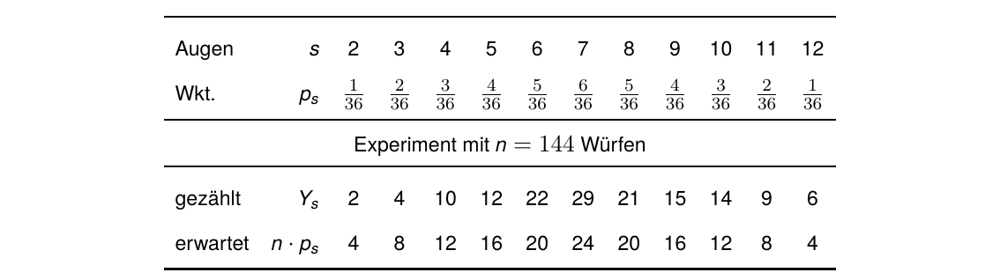
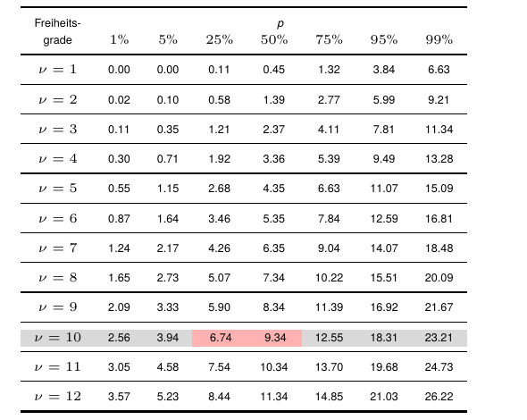
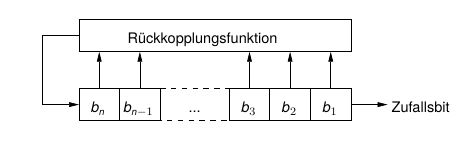
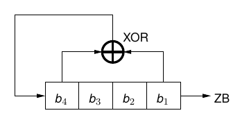

Zufallszahlen

Prof. Dr. Lukas Iffländer
HTW Dresden
14.09.2026
Agenda
- 01Zufallszahlen
- 02Güte von Zufallszahlen
- 03χ²-Test
- 04Lineare Kongruenzgeneratoren
- 05Schieberegister
- 06Kryptografisch sichere Generatoren
Zufallszahlen
Wozu?
- (Monte-Carlo-)Simulation, Statistik
- randomisierte Algorithmen
- Spiele
- Kryptografie: Schlüssel, große Primzahlen finden, …
Zufallszahlen durch einen echten zufälligen Prozess generiert (Rauschen, atomare Zerfallsprozesse, …)
Pseudozufallszahlen - Folgen von Zahlen, die wie Zufallszahlen aussehen (, aber durch einen deterministischen Prozess generiert werden)
Güte von Zufallszahlen
Anforderungen
- Gleichverteilung
- lange bzw. keine Periode
- Unabhängigkeit
- effizient ermittelbar
Kryptografisch sichere Zufallszahlen dürfen zusätzlich nicht vorhersehbar sein.
Prüfung der Güte erfolgt mittels Tests, z.B.:
| wahrscheinlichkeitstheoretisch | empirisch |
|---|---|
| χ2-Test1 | Gleichverteilungstest |
| Kolmogorov-Smirnov-Test | Serientest |
1 sprich: “Tschih-Quadrat-Test”
χ²-Test
Beispiel: Zwei gekoppelte Würfel [1]

- Maß für die „Abweichung“ der Würfelwerte vom „richtigen“ Verhalten: \[ Vabs = (Y_2 − n · p_2)^2 + (Y_3 − n · p_3)^2 + · · · + (Y_{12} − n · p_{12})^2 \tag{1.1} \]
- unausgewogen, da (z. B.) Fehler in Y7 aufgrund p7 > p2 viel stärker gewichtet als Fehler in Y2
χ²-Test
Beispiel: Zweigekoppelte Würfel und Verallgemeinerung
⇒ Normierung mit erwarteter Anzahl:
\[ V= \frac{(Y_2-np_2)^2}{np_2} + \frac{(Y_3-np_3)^2}{np_3} + \cdots + \frac{(Y_{12}-np_{12})^2}{np_{12}} \tag{1.2} \]
Allgemein gilt:
\[ V= \sum_{s=1}^{k} \frac{(Y_s-np_s)^2}{np_s} \tag{1.3} \]
(V) wird nun in der Tabelle der Quantile der (^2)-Verteilung gesucht:
Freiheitsgrade () (“nü”):
\[ \nu = k-1 \]
(Anzahl Kategorien − 1)
Tabelleneintrag (x) in Zeile ():
“(V) ist kleiner oder gleich (x) mit Wahrscheinlichkeit (p).”
χ²-Test
Tabelle der Quantile der χ²-Verteilung

- Für das Beispiel gilt
V ≈ 7.15, ν = 10 . - Abzulesen: V ≤ 9.34 mit
50%iger Wkt., V ≤ 6.74 mit
25%iger Wkt.
- V = 7.15 tritt also rund einem Drittel aller Fälle auf.
⇒ Würfel sind o.k.!
Lineare Kongruenzgeneratoren [2]
Berechnung einer Zufallsfolge mittels
\[ z_{i+1} = (a \cdot z_i + b) \bmod m \tag{1.4} \]
(m prim, Initialisierungswert z0 mit 0 < z0 < m; a, b Parameter)
Beispiel: a = 6, b = 0, m = 13, z0 = 2
| i | 0 | 1 | 2 | 3 | 4 | 5 | 6 | 7 | 8 | 9 | 10 | 11 | 12 | … |
|---|---|---|---|---|---|---|---|---|---|---|---|---|---|---|
| zi | 2 | 12 | 7 | 3 | 5 | 4 | 11 | 1 | 6 | 10 | 8 | 9 | 2 | … |
- generiert volle Periode (auch für m = 231 - 1, a = 16807, u. a.)
- zi = 0 nicht erreichbar (warum?)
- keine volle Periode z. B. für m = 13, a = 5, b = 0, z0 = 1
- effiziente Berechnung, gutes statistisches Verhalten
- ungeeignet für kryptografische Zwecke, da vorhersehbar
Linear rückgekoppelte Schieberegister
Prinzip

Abbildung: Rückgekoppeltes Schieberegister mit n Bit Länge
Arbeitsweise:
- Ausgabe des Bits b1 als neues Zufallsbit
- gleichzeitig Verknüpfung der Bits bi miteinander (z. B. mittels ⊕) in Rückkopplungsfunktion
- Ergebnis der Verknüpfung wird bn, alle anderen Bits eine Stelle nach rechts
Linear rückgekoppelte Schieberegister
Beispiel

- sog. linear feedback shift register (LFSR)
- (n=4) Bit, Initialisierung: (z_0=1111)
- maximale Periode: (2^n-1)
- Ergebnis darf nie (0) sein
| (i) | (b) | Ausgabe |
|---|---|---|
| 0 | 1111 | – |
| 1 | 0111 | 1 |
| 2 | 1011 | 1 |
| 3 | 0101 | 1 |
| 4 | 1010 | 1 |
| 5 | 1101 | 0 |
| 6 | 0110 | 1 |
| 7 | 0011 | 0 |
| 8 | 1001 | 1 |
| (i) | (b) | Ausgabe |
|---|---|---|
| 9 | 0100 | 1 |
| 10 | 0010 | 0 |
| 11 | 0001 | 0 |
| 12 | 1000 | 1 |
| 13 | 1100 | 0 |
| 14 | 1110 | 0 |
| 15 | 1111 | 0 |
usw.
Mersenne-Twister [3]
- modern
- einfacher Algorithmus, effizient
- liefert jeweils 624 32-Bit-Werte auf einmal
- nicht für kryptografische Zwecke geeignet (aus einer Reihe Ergebnisse können zukünftige Zufallszahlen ermittelt werden)
- sehr große Periodenlänge (p = 219937 - 1 ≈ 4.3 * 106001)
- in sehr vielen Programmen/Programmiersprachen genutzt, z. B. Excel, libgmp, PHP, Python, R, Ruby
Kryptografisch sichere Generatoren
aka Cryptographically Secure Random Number Generators (CSRNG)
Zusätzliche Anforderungen
- Wenn die ersten k Bit eines Zufallsgenerators bekannt sind, dann soll es keinen effizienten Algorithmus geben, der den Wert des k + 1-ten Bits mit mehr als 50% Wahrscheinlichkeit bestimmt.
- Wenn ein Angreifer den inneren Zustand des CSRNG ganz oder teilweise kennt, soll es unmöglich sein, die bis dahin erzeugte Zufallszahlenfolge zu rekonstruieren.
Beispiele (komplexe Algorithmen)
- Blum Blum Shub (1986) [4]
- Yarrow (B. Schneier, 1999) [5]
- Fortuna [6]
Lesevorschläge
- Kapitel 3 “Random Numbers” in Donald Ervin Knuth. Art of Computer Programming, Volume 2 Seminumerical Algorithms. Seminumerical Algorithms. Pearson Education, Limited, 1998. ISBN: 9780133488791
- Kapitel 5 “Pseudorandom Bits and Sequences” in Alfred J. Menezes, Paul C. Oorschot und Scott A. Vanstone. Handbook of applied cryptography. Rev. repr. with updates, [5. print.] Discrete mathematics and its applications. Boca Raton, Fla. [u.a.]: CRC Press, 2001. 780 S. ISBN: 0849385237
- S. K. Park und K. W. Miller. “Random number generators: good ones are hard to find”. In: Communications of the ACM 31.10 (Okt. 1988), S. 1192-1201. ISSN: 1557-7317. DOI: 10.1145/63039.63042
Literaturverzeichnis I
[1] Donald Ervin Knuth. Art of Computer Programming, Volume 2 Seminumerical Algorithms. Seminumerical Algorithms. Pearson Education, Limited, 1998. ISBN: 9780133488791.
[2] James Reeds. ““Cracking” a Random Number Generator”. In: Cryptologia 1.1 (Jan. 1977), S. 20-26. ISSN: 1558-1586. DOI: 10.1080/0161-117791832760.
[3] Makoto Matsumoto und Takuji Nishimura. “Mersenne twister: a 623-dimensionally equidistributed uniform pseudo-random number generator”. In: ACM Transactions on Modeling and Computer Simulation 8.1 (Jan. 1998), S. 3-30. ISSN: 1558-1195. DOI: 10.1145/272991.272995.
[4] L. Blum, M. Blum und M. Shub. “A Simple Unpredictable Pseudo-Random Number Generator”. In: SIAM Journal on Computing 15.2 (Mai 1986), S. 364-383. ISSN: 1095-7111. DOI: 10.1137/0215025.
Literaturverzeichnis II
[5] John Kelsey, Bruce Schneier und Niels Ferguson. “Yarrow-160: Notes on the Design and Analysis of the Yarrow Cryptographic Pseudorandom Number Generator”. In: Lecture Notes in Computer Science. Springer Berlin Heidelberg, 2000, S. 13-33. ISBN: 9783540465133. DOI: 10.1007/3-540-46513-8_2.
[6] Niels Ferguson und Bruce Schneier. Practical Cryptography. Bruce. Practical cryptography. Literaturverz. S. 387-395. Indianapolis, Ind.: Wiley, 2003. 410 S. ISBN: 047122894X.
[7] Alfred J. Menezes, Paul C. Oorschot und Scott A. Vanstone. Handbook of applied cryptography. Rev. repr. with updates, [5. print.] Discrete mathematics and its applications. Boca Raton, Fla. [u.a.]: CRC Press, 2001. 780 S. ISBN: 0849385237.
[8] S. K. Park und K. W. Miller. “Random number generators: good ones are hard to find”. In: Communications of the ACM 31.10 (Okt. 1988), S. 1192-1201. ISSN: 1557-7317. DOI: 10.1145/63039.63042.
Vielen Dank!
Prof. Dr. Lukas Iffländer
HTW Dresden
14.09.2026

14.09.2026 / Zufallszahlen / HTW Dresden / Prof. Dr. Lukas Iffländer